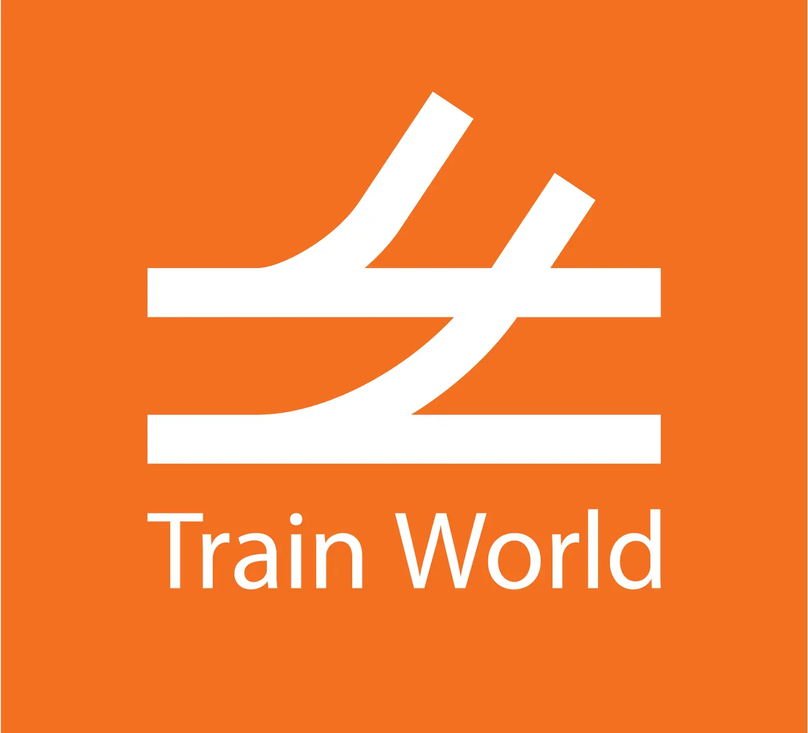

Plan your visit
End of the XX – beginning of the XXI century
Drag and Drop Countries in a right order, when ready - sign the contract
The Establishment and Development of the PBKAL High-Speed Rail Network
Document Number: PBKAL1986/001
Opened in 1994, the Eurotunnel is an engineering marvel, connecting the UK and France
with the world's longest undersea
tunnel portion. It dramatically reduces travel time between the two countries, symbolizing a triumph of
technology and
international cooperation.
After Eurotunnel was build you can go from Paris to London in 2 hours
In 2002, a significant milestone in the development of Belgium's high-speed rail
network was marked with the opening of
the High-Speed Line (HSL) between Leuven and Liège. This line was a key part of Belgium's commitment to
enhancing its
railway infrastructure, greatly reducing travel time between these two major cities.
The
Leuven-Liège
HSL was a testament to Belgium's dedication to modernizing its transportation system, providing faster,
more efficient connections that catered to both the country's growing commuter base and its position in
the
broader
European high-speed train network.
2009 witnessed the further expansion of Belgium's high-speed rail capabilities with
two
significant openings. The first
was the Chênée - Walhorn section, which included the impressive Soumagne Tunnel, known for being the
longest
railway
tunnel in Belgium. This section was crucial for enhancing the connectivity in the eastern part of the
country.
The same year, the high-speed line between Antwerp and the Dutch border began operations,
effectively linking major
Belgian cities with the Netherlands. This extension not only facilitated smoother cross-border travel but
also
solidified Belgium's role in the expanding network of European high-speed rail.